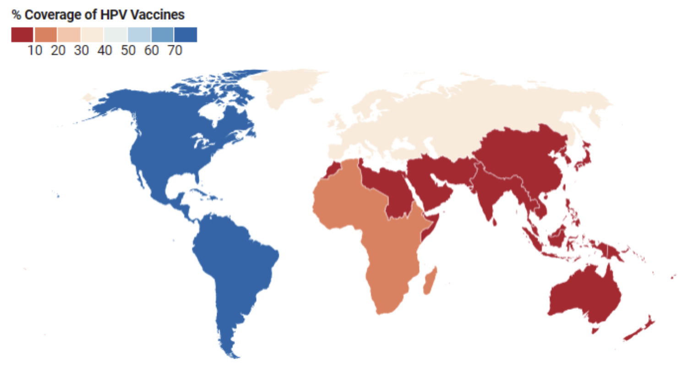

Over 80% of all cervical cancers and deaths caused by cervical cancer occured in lower-resource countries.
There is a correlation between a low Human Development Index (HDI), which relates to a country's standard of living, and increased incidence of cervical cancer.
HPV Vaccine Coverage

The HPV vaccine protects against Human papillomavirus (HPV), which is a common cause of cervial cancer.
There is little correlation between areas with a high HDI and high coverage of the HPV vaccine.
The Americas have the best vaccine coverage (76% of women are vaccinated by age 15).